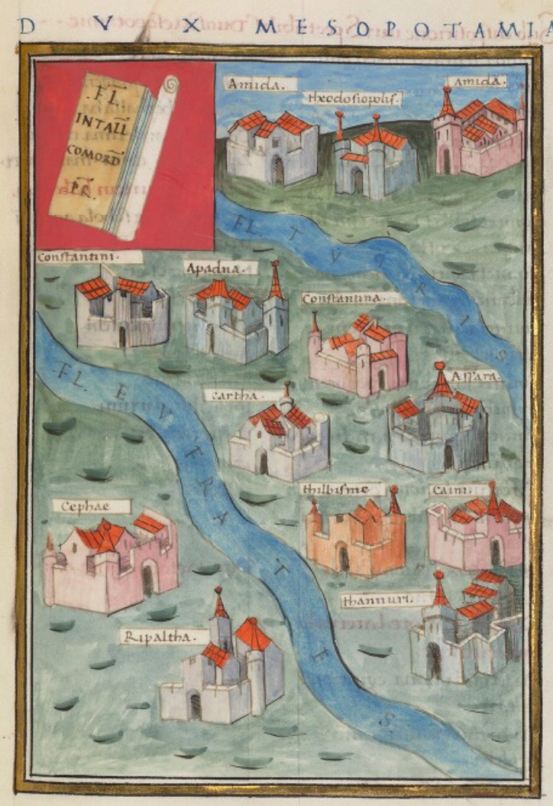
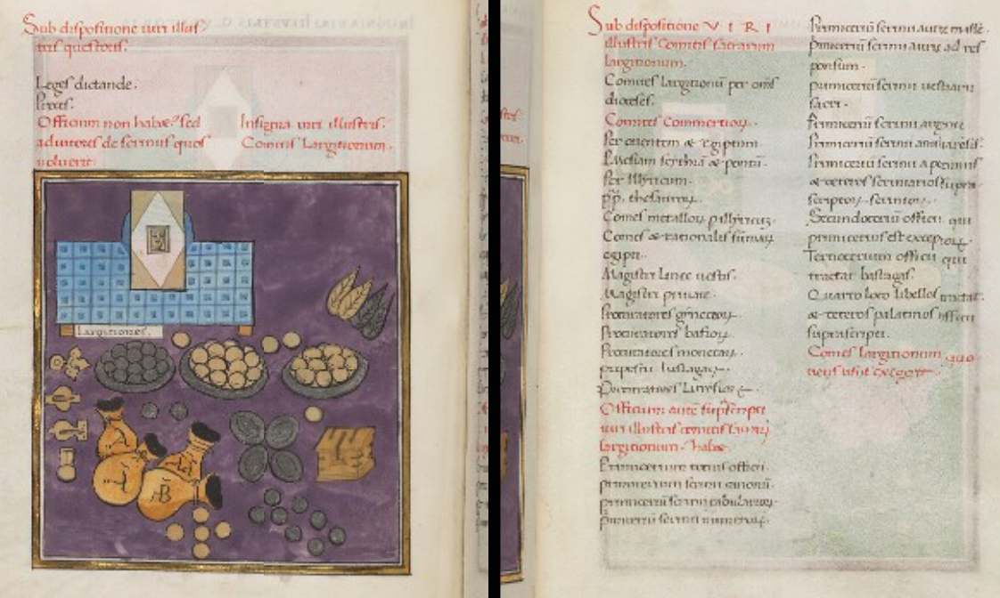

Living Notitia
The machinery of an empire.
Around AD 400, the Roman Empire was governed across an enormous territory stretching from Britain and the Atlantic to North Africa and the eastern frontier.
The emperor could not administer this world directly. Authority was distributed through a hierarchy of civil and military offices: prefects, governors, commanders, staffs and local officials, each responsible for particular territories, functions and military forces.
The Notitia Dignitatum preserves an extraordinary record of this system. It lists the offices through which the Empire was governed, the commands beneath them, the military units assigned to them, and many of the places where this organisation operated.
Behind its short Latin entries was a living administrative system spread across thousands of kilometres. Living Notitia aims to make that system visible again.


A vast empire
The Roman Empire with its dioceses around AD 400. Modern reconstruction. Distance made governance an information problem.
Map: Mandrak / Wikimedia Commons · Public domain
A document made by hand
Text from Chapter XII continues at the top of the page; Chapter XIII begins below it with the illustrated Insignia largitionum. Even the page itself shows how carefully manuscript space was used.
Bodleian Library, MS. Canon. Misc. 378.